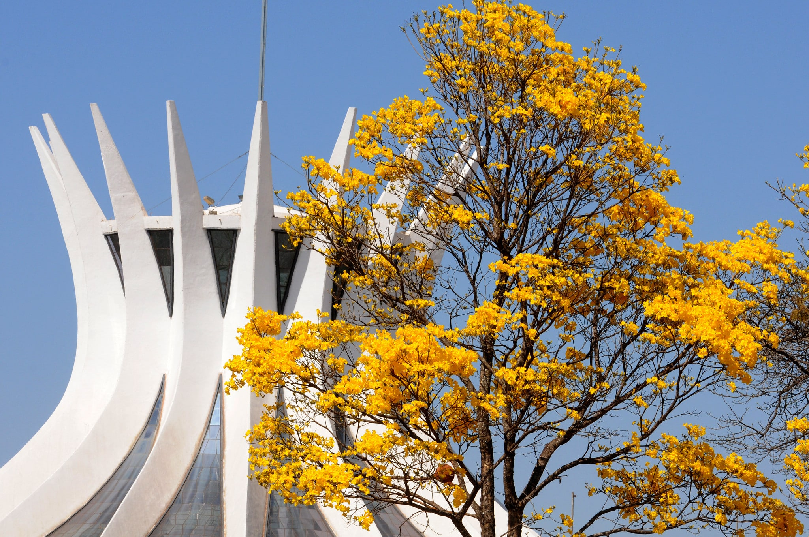

I'm currently a PhD student at the ITP III.
I'm interested in understanding, at different levels, how complex and unique phenomena emerge from interactions between (almost?) fundamental building blocks of nature; and on developing, extending, and applying numerical techniques in the physical sciences.
If you'd like to discuss research, feel free to reach out: joao.sobral@itp3.uni-stuttgart.de
